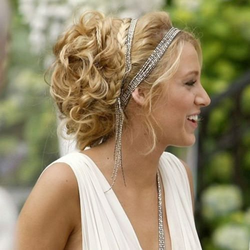
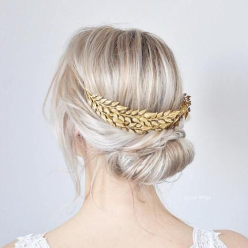
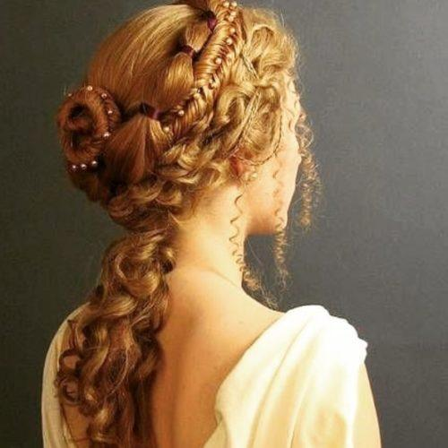
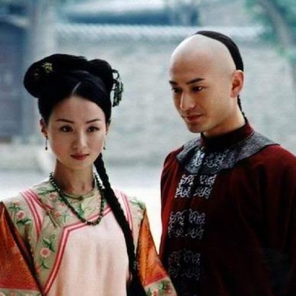

Hairstyles
by Tamara Melcher


The hairstyle fashion has been existing for over 5169 years now.
The oldest culture to be known to style their hair were the ancient Egyptians.
They styled their hair with knifes, hairpins and combs.
But it was not only the ancient Egyptians who styled their hair pretty early, also the ancient Greek loved to style their hair.
The ones who did not style their hair well had to pay fines. The complicated hairstyles were often made with wigs.
In contrast to ancient Greece, the ancient Romans liked to wear easy hairstyles.

During the renaissance the women started to like to wear open hair again.
The hairstyles also got more imaginative.
Most of the time they made a node on the head and decorated it with pearls, chains and precious stones.
In the beginning of 20th century the short hair came back.
The old Egyptian hairstyle named Pageboy was the most famous one.
Over time women started to wear headscarves.
In the whole 20. century the women liked to have curly hair.
All in all humanity nearly always loved to style their hair in thousands different ways and in thousands of years always different.
Hairstyles around the world
In our world there are so many different cultures with different styles,so it is nearly impossible to determine which one of them is the most popular one.
Most of the people only focus on the clothes someone wears, so they forget that it is not only the clothes that differ our different cultures.
It is also the way how each culture styles their hair.
For example, the traditional Japanese hairstyle:

Comments